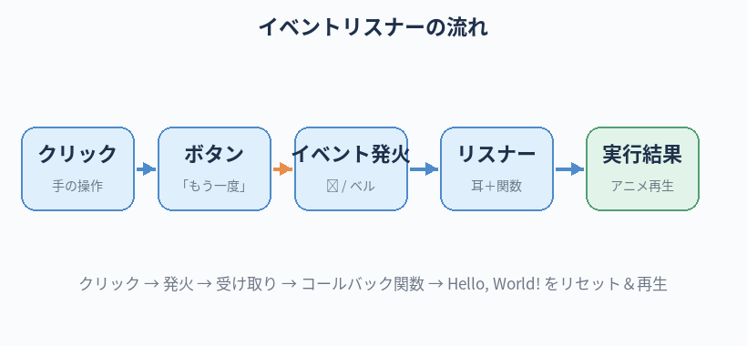

Hello World にアニメーション（動き）を付ける。
JavaScript の最小の使い方を体験する。AI と相談しながら、動くものを作る感覚をさらに深める。
実装練習③：JavaScript でアニメーション（AI と相談）
この章のゴール
JavaScript って何？
JavaScript（ジャバスクリプト）は、Web ページに 動き・反応・対話性を加えるためのプログラミング言語です。
HTML が「内容」、CSS が「見た目」だとすると、JavaScript は「動作」です。
- ボタンを押したら何かが起きる
- 時間経過でアニメーションする
- 入力した文字に反応する
- サーバーからデータを取ってきて表示する
本章ではこのうち 「時間経過でアニメーションする」を体験します。
絶対に覚える：JavaScript の用語
JavaScript は「やれること」が広いため用語も多いですが、最初は変数 / 関数 / イベント / コンソールの4つだけでOKです。
Variable変数
- 一言で
- 値に名前を付けて取り出せるようにする入れ物。
const x = 10のように書く - たとえると
- 箱に名前を貼って中身を入れる感覚。
const＝中身を変えない／let＝あとで変える - 関連
- const / let / var（古い）
Function関数
- 一言で
- 一連の処理を名前を付けてまとめたもの。あとから何度でも呼び出せる
- たとえると
- 「料理レシピを名前付きで保存」しておく感覚。「カレーを作る」と言えばその工程が走る
- 関連
- function / 引数 / 戻り値
Eventイベント
- 一言で
- ユーザーや時間によって「何かが起きる」きっかけ。例：クリック、キー入力、画面表示
- たとえると
- 「ベルが鳴ったら反応する」のベル。これを聞き取るのが
addEventListener - 関連
- click / keydown / load
Event Listenerイベントリスナー
- 一言で
- そのイベントが起きた時に「これを実行してね」と登録する仕組み
- たとえると
- 「ベルが鳴ったら冷蔵庫を開ける」と耳をすませる係。
btn.addEventListener("click", function () { ... }) - 関連
- addEventListener / コールバック
Consoleコンソール
- 一言で
- ブラウザに付いている「JS の動作確認用ターミナル」
- たとえると
- JS 開発の最強の友。
console.log(x)で値を覗ける。option + command + Iで開く（DevTools の中） - 関連
- DevTools / console.log / エラーメッセージ
DevToolsデヴツール／開発者ツール
- 一言で
- ブラウザの裏側を覗く道具（HTML / CSS / JS / 通信を確認できる）
- たとえると
- クルマのボンネットを開ける。動きが変な時、まずここを開いて状況を確認する
- 関連
- Console / Elements / Network
準備：第9章のフォルダで続ける
cd ~/dev/hello-world
claude --continue
Step 1：シンプルなアニメーションを依頼
Hello, World! の文字に、ページを開いた時にふわっとフェードイン（だんだん表示）するアニメーションを付けたいです。
・1.5秒くらいの時間をかけて
・最初は透明、最後にはくっきり表示
JavaScript と CSS のどちらで実現するのが初心者向けに分かりやすいか、教えてください。
その上で、実装案を提示してください。
・1.5秒くらいの時間をかけて
・最初は透明、最後にはくっきり表示
JavaScript と CSS のどちらで実現するのが初心者向けに分かりやすいか、教えてください。
その上で、実装案を提示してください。
Claude は「これは CSS だけで実現できます」と提案してくることが多いはずです。 まずはそれを採用してみましょう。
CSS のみで実装した場合の例
@keyframes fadeIn {
from { opacity: 0; }
to { opacity: 1; }
}
h1 {
animation: fadeIn 1.5s ease-in;
}
保存してブラウザを強制更新（command + shift + R）して、動きを確認してください。
Step 2：JavaScript を使ってもっと凝らせる
次は JavaScript の出番です。ボタンを押すと文字が動く、にしてみましょう。
Hello, World! の下に「もう一度」というボタンを置いてください。
ボタンを押すと、Hello, World! の文字がもう一度フェードインのアニメーションをやり直す、という動きにしてください。
JavaScript は別ファイル script.js に書いてください。
初心者向けに、JS のコードに各行のコメントを添えてくれると嬉しいです。
ボタンを押すと、Hello, World! の文字がもう一度フェードインのアニメーションをやり直す、という動きにしてください。
JavaScript は別ファイル script.js に書いてください。
初心者向けに、JS のコードに各行のコメントを添えてくれると嬉しいです。
Claude が3つの変更案を出してくれるはずです：
index.htmlにボタンを追加 /<script>タグで JS を読み込むstyle.cssの調整（ボタンの見た目）script.jsを新規作成
script.js の中身（例）
// 「もう一度」ボタンが押された時の動作を登録
const btn = document.getElementById("replay-btn");
const h1 = document.querySelector("h1");
btn.addEventListener("click", function () {
// いったんアニメーションをリセット
h1.style.animation = "none";
// 強制的にレイアウトを更新（DOM のおまじない）
void h1.offsetWidth;
// アニメーションを再付与
h1.style.animation = "fadeIn 1.5s ease-in";
});

Step 3：動作確認
ブラウザを更新して、ボタンを押すと文字が再度フェードインすれば成功です。
Step 4：意味の分からない行を解説してもらう
上の例には void h1.offsetWidth; という不思議な行があります。
こういう「えっ、これ何？」を放置しないのが上達の最短ルート。
script.js の中の「void h1.offsetWidth;」が何のために書いてあるのか、初心者向けに教えてください。
これが無いと何が起きるのですか？
これが無いと何が起きるのですか？
Step 5：自分で何か1つ変えてみる
手を動かす練習として、自分で何か1個だけ変えてみましょう。例えば：
- アニメーション時間を 1.5s から 3s にしてゆっくりにする
- フェードインだけでなく、上から下にスライドしてくる動きを加える
- ボタンの色を変えてみる
もちろん、迷ったら AI に「こういう動きにしたいけど、どこを変えればいい？」と相談してOKです。
Step 6：「公開」もう一歩進めて考える
第8章で説明した GitHub Pages で公開するなら、CSS と JS のファイルも一緒に上げる必要があります。 第11章でリポジトリ化のときに、フォルダごと上げるので問題ありません。
AI 相談で覚えておきたい3つのテクニック
① 「全部一気に」ではなく「1機能ずつ」頼む
「ヘッダーとフッターと記事一覧を一気に作って」ではなく、「まずヘッダーから」「次にフッター」と段階的に頼むと、各段階で確認しながら進められます。
② 動かない時は「画面でこう見えている」まで説明する
「ボタンを押しても何も起きない」だけでは原因が分かりません。
「ボタンを押すと、ブラウザの右下に何か小さい印が一瞬出る」「コンソールには『undefined』と出ている」のように、見えている事実を全部伝えると AI も特定しやすくなります。
③ コードを動かす前に「確認のお願い」を入れる
この実装を進める前に、ファイル変更の前後の差分を表で見せてください。
内容を確認してから OK を出します。
内容を確認してから OK を出します。
本章のチェックリスト
すべてチェックを付けると「次の章へ」のリンクが解放されます。
チェック 0 / 5
次の章へ
実装練習が一段落しました。次の第11章では、ここまで作ったファイルを GitHub に上げて、世界に公開するところまで進めます。